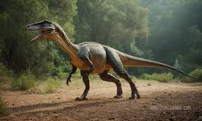

Adres: Zwoleń Radosna 26-700
Kontakt: nr. 797 715 111
email: jurrasicpark@gmail.com
Godziny otwarcia


Troodon to rodzaj małego drapieżnego dinozaura, który żył w późnej kredzie, około 76-66 milionów lat temu, na terenach dzisiejszej Ameryki Północnej. Był to inteligentny i zwinny teropod, który osiągał długość około 2-3 metrów i ważył do około 50 kilogramów. Troodon wyróżniał się względnie dużym mózgiem jak na dinozaura, co sugeruje, że mógł on być jednym z najbardziej inteligentnych dinozaurów.  Charakterystyczne cechy Troodona obejmują długą, smukłą czaszkę, zaokrąglone oczy i duże, stożkowate zęby. Jego kończyny były proporcjonalnie długie, co wskazuje na to, że mógł on być szybkim i zwinym drapieżnikiem, polującym na mniejsze zwierzęta oraz prawdopodobnie korzystającym z okazji do kradzieży jaj innych dinozaurów. Odkrycie skamieniałości Troodona dostarczyło paleontologom cennych informacji na temat anatomii, zachowań i ekologii tych prehistorycznych drapieżników. Choć pierwotnie klasyfikowany jako dinozaur teropod, niektóre badania sugerują, że Troodon mógł być bardziej związany z ptakami niż większość innych dinozaurów. Jego tajemnicza i ciekawa natura czyni go obiektem intensywnych badań i fascynacji wśród naukowców i miłośników dinozaurów.
Adres: Zwoleń Radosna 26-700
Kontakt: nr. 797 715 111
email: jurrasicpark@gmail.com
Godziny otwarcia